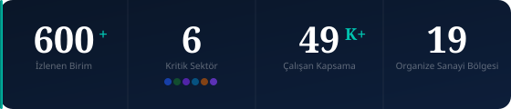
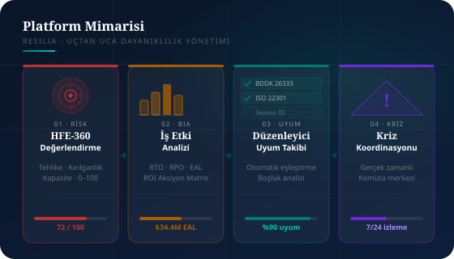
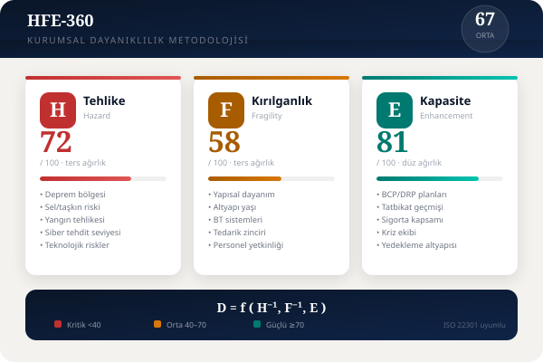
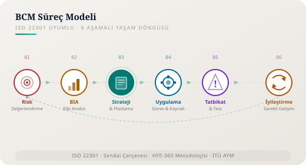

Bankacılıktan eğitime, üretim tesislerinden belediyelere — altı kritik sektörde merkezi risk skorlaması, düzenleyici uyum izleme ve gerçek zamanlı kriz koordinasyonu.

RESILIA, her sektörün düzenleyici zorunlulukları, operasyonel yapısı ve tehlike sınıfına göre özelleştirilmiş değerlendirme metodolojisi sunar.
Yüzlerce şubeden oluşan bankacılık ağlarında merkezi dayanıklılık skorlaması, düzenleyici uyum takibi ve gerçek zamanlı kriz koordinasyonu.
Hastane ve sağlık tesislerinde hasta güvenliğini merkeze alan iş sürekliliği planlaması, akreditasyon hazırlığı ve kritik tıbbi altyapı koruması.
Büyükşehir ve ilçe belediyelerinde afet koordinasyonu, altyapı dayanıklılığı ve vatandaş hizmetlerinin kesintisiz sürdürülmesi.
İl millî eğitim müdürlüklerinin bağlı okullarını merkezi ekrandan izleyebileceği, okul bazlı dayanıklılık değerlendirme ve raporlama sistemi.
OSB ve üretim tesislerinde iş sağlığı ve güvenliği uyumu, tehlikeli madde yönetimi ve operasyonel sürekliliğin entegre platformu.
Odaya bağlı sanayi ve ticaret kuruluşlarının tamamını kapsayan merkezi dayanıklılık izleme ve üye firma raporlama platformu.
RESILIA, risk değerlendirmesinden iş etki analizine, düzenleyici raporlamadan gerçek zamanlı kriz koordinasyonuna tüm süreci tek bir entegre platformda yönetmenizi sağlar.

İTÜ Afet Yönetim Merkezi ile ortaklaşa geliştirilen HFE-360, kurumsal dayanıklılığı üç temel boyut üzerinden ölçer: Tehlike (Hazard), Kırılganlık (Fragility) ve Kapasite (Enhancement).
Her sektör için özelleştirilmiş değerlendirme formu, gerçek operasyonel verilere dayanarak 0–100 aralığında bir dayanıklılık skoru üretir. Skor; aksiyon önceliklendirme, bütçe planlaması ve düzenleyici raporlamayı doğrudan besler.

RESILIA, iş sürekliliği yönetiminin tüm aşamalarını birbirine bağlar. Risk değerlendirmesinden tatbikata, iyileştirmeden düzenleyici uyuma kadar bütünleşik süreç.

200 şubemizin dayanıklılık profilini tek ekrandan yönetmek, BDDK denetim sürecimizi temelden değiştirdi. HFE-360 skoru kaynak tahsis kararlarımızda belirleyici oluyor.
200 üye tesisimizde standartlaştırılmış değerlendirme ve Seveso III uyum takibi artık otomatik. Karşılaştırmalı raporlama üye firmalarımızın çok işine yarıyor.
JCI akreditasyon sürecimizde HFE-RİSK modülü klinik süreç önceliklendirmemizde belirleyici oldu. Hasta güvenliği ve iş sürekliliği artık tek platformda.
Demo hesapla platforma erişin. Akbank, İş Bankası, İstanbul Sanayi Odası ve daha fazlası için önceden yüklenmiş veriyle sistemi keşfedin.